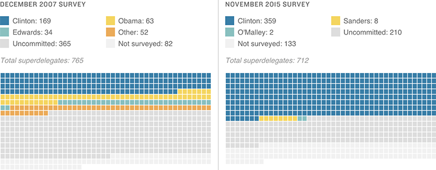

An Associated Press survey of superdelegates has found that more delegates have pledged their support than at this time in the 2008 campaign — and a majority support Hillary Clinton.

Notes
AP pollsters reached 90 percent of superdelegates in 2007 and 80 percent in 2015.